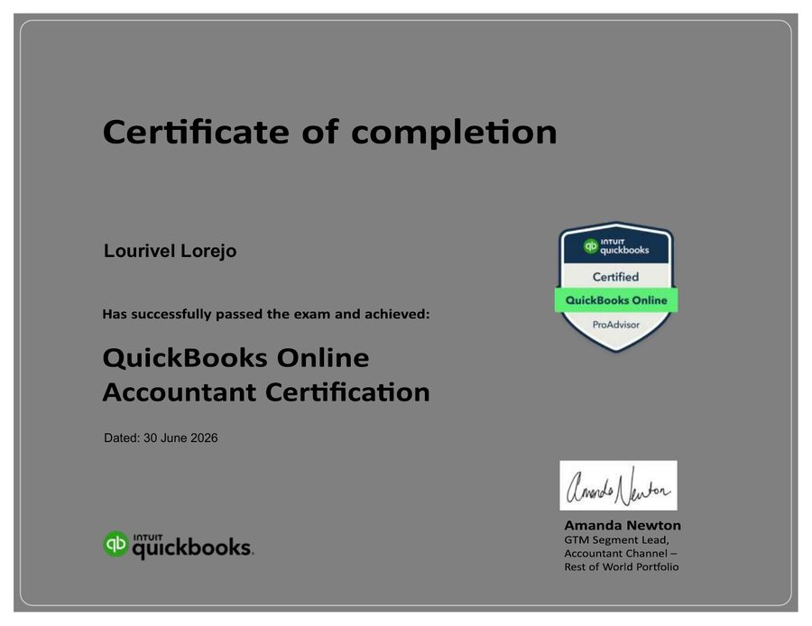

Control the details
Transaction review, reconciliations, AP/AR monitoring, exception research, and clear documentation.
Accounting · Executive Support · Client Service
I help remote teams keep books, records, trackers, and client follow-ups accurate, organized, and ready for action.
How I support a team
I am a Management Accounting graduate and Certified QuickBooks Online ProAdvisor with experience in remote bookkeeping, banking, automotive after-sales reporting, and distribution.
Alongside accounting, I bring transferable executive and administrative strengths: confidential document handling, tracker ownership, deadline follow-up, client communication, and concise status reporting.
Transaction review, reconciliations, AP/AR monitoring, exception research, and clear documentation.
Action trackers, supporting documents, deadlines, status updates, and stakeholder follow-through.
Client-question logs, vendor and customer coordination, issue escalation, and professional written English.
Selected work
Public-safe portfolio samples using clearly labeled fictional e-commerce data.
Featured case study · Fictional data
A six-page sample showing the reasoning and controls behind a cleanup—from raw bank-feed review to reconciliation and financial statements.
Control workbook · Fictional e-commerce data
A 25-sheet control framework connecting source documents, recording, matching, investigation, reconciliation, follow-up, and close.
Dashboard · 40 fictional transactions
A formula-driven working paper for cash activity, AP/AR, payroll, client questions, exceptions, and monthly review.
Independent Bookkeeping Projects · Remote · US Client
Project-based bookkeeping, cleanup, AP/AR monitoring, reconciliations, and reporting support using QuickBooks Online and spreadsheet-based financial records.
Bank of Makati
High-volume accounting transactions in Oracle, bank and general-ledger reconciliations, discrepancy research, and data analysis.
Toyota Cagayan de Oro City
Accounts-receivable monitoring, payment verification, SAP Statements of Account, adjusting entries, and Excel process improvements.
Fast Distribution Corporation
Invoice and three-way document review, payment-control support, month-end reporting, bank reconciliation, and vendor coordination.
Credentials
Each label below reflects the exact type of credential earned.

June 2026
QuickBooks Online Accountant certification.
View certificateOctober 2015
Certificate of completion issued at Liceo de Cagayan University.
View certificateAugust 2023
Certificate of completion from Bank of Makati's Organizational and People Development Department.
View certificateLanguage
English: advanced grammar and vocabulary, supported by a C2 self-assessment from Exam English (July 2026). This is a self-assessment, not an official examination result.
View assessmentLet's work together
I am open to remote accounting, bookkeeping, executive or administrative support, and client service opportunities.